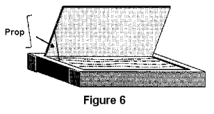
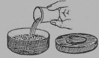
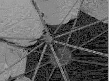
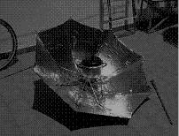
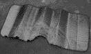
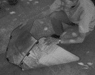
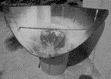
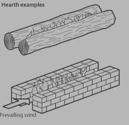
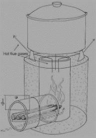

Alternate Cooking
Solar Cookers......................................................................................................................................................... 2
Solar Box Cooker................................................................................................................................................ 2
Solar Tire Cooker................................................................................................................................................ 4
Solar Umbrella Cooker........................................................................................................................................ 5
Solar Windshield Shade Funnel Cooker............................................................................................................. 6
Fire Cooking........................................................................................................................................................... 8
Three Stone Fire................................................................................................................................................. 8
Hearths............................................................................................................................................................... 9
Fire Hole............................................................................................................................................................. 9
Rocket Stove..................................................................................................................................................... 10
If you have no utilities and no way to prepare hot meals without the aid of your kitchen appliances, you may have to survive on cold, ready-to-eat foods. Initially, that may not prove to be much of a problem, but unless you have invested heavily in ready-to-eat foods, you will eventually run out of things you can serve without cooking. For economic reasons, emergency food supplies are often built around large quantities of low-cost grain products that can tolerate long-term storage. These are items such as beans, oatmeal, pasta, lentils, split peas, wheat, and rice–all of which must be cooked. You may even discover that half of your emergency food calories are locked up in dry grain products. This should not present much of problem, however, because with a good camp stove and a decent supply of cooking fuel, you can avail yourself of all those grains and prepare hot food for every meal.
Fortunately, cooking with camp stoves is cheap and easy, so there is really no excuse for serving cold food, even in a prolonged emergency situation. Here are some tips for cooking without modern appliances:
► Acquire at least one camp stove that burns Coleman liquid fuel and a second stove that burns propane.
Propane camp stoves are very safe for indoor cooking, but they cost a lot more to operate than liquid fuel stoves. Save the propane stove for use when the weather is bad or when it is simply not safe to cook outdoors.
► Some camp stoves are dual-fuel capable, which means they can burn both Coleman liquid fuel and
regular unleaded gasoline. These stoves are inexpensive, so you might think about buying two or three and saving one for use as a back up. If you cannot find Coleman liquid fuel, you can still store enough cooking fuel for a dual-fuel stove for months: fill up a couple of 5-gallon gas cans. A 10,000 BTU burner, operating for an hour each day, will only use about two gallons per month. Although Coleman liquid fuel is highly refined and has chemical stabilizers for long-term storage, you still need to rotate your stock to keep it fresh. Measure the rate at which your stoves consume fuel, then acquire a 6-month supply for each one. Plan for an average of 20 minutes of cooking time for each meal. This rate of consumption will allow you to boil large kettles of pasta or beans.
► If you become sick, your family members will have to cook for you, so while conditions are still normal, be
sure to have everyone become familiar with the stoves. Show them how to setup, light, cook, clean, refuel, and store each stove.
► For emergency cooking indoors, you can use a fireplace. You can keep cooked food hot by using candle
warmers, chafing dishes, and fondue pots. Use only approved devices for warming food.
► A charcoal grill, camp stove or fire pit can be used outdoors.
► Canned food can be eaten right out of the can. If you heat it in the can, be sure to open the can and remove the label before heating. Always make sure to extinguish open flames before leaving the room.
Have at least two manual can openers for all those canned goods.
► Utilize various solar ovens and cookers when sunlight is available. In the following section, there are
several simple cookers, which can be expediently constructed.
► Utilize simple fire cookers that also can be easily constructed, also listed in the following section.
► If prepared in advance, freezer bag meals can be used; techniques and recipes are listed in the following section as well.
► MRE’s (Meals, Ready to Eat) are pre-packaged single meals issued to US military personnel during
exercises or combat. These meals come in cases of 12 in two variants, the A and B case, with different meals in each case. In the new MRE meals, there is a flameless chemical heater that is activated by adding a small amount of water to the heater bag. Once activated, these heaters get extremely hot and can produce a scalding steam. Caution is required! Read the directions carefully before using chemical heater bags. MREs are quite expensive and heavy but can be very useful where cooking time, resources or mobility are at a premium. Army/Navy surplus stores or EBay auction often carry MREs.


Solar Cookers
Solar Box Cooker
► Two cardboard boxes. We would suggest that you use an inner box that is at least 15 inch x 15 inch (38 cm x 38 cm), but bigger is better. The outer box should be larger all around, but it doesn't matter how much bigger, as long as there is a half inch (1.5cm) or more of an airspace between the two boxes. The distance between the two boxes does not have to be equal all the way around. Also, keep in mind that it is very easy to adjust the size of a cardboard box by cutting and gluing it.
► One sheet of cardboard to make the lid. This piece must be approximately 2 to 3 inch (4 to 8 cm) larger all the way around than the top of the finished cooker (the outer box).
► One small roll of aluminum foil.
► One can of flat-black spray paint (look for the words "non-toxic when dry") or one small jar of black tempera paint. Some people have reported making their own paint out of soot mixed with wheat paste.
► At least 8 ounces (250 g) of white glue or wheat paste.
► One Reynolds Oven Cooking Bag®. These are available in almost all supermarkets in the U.S. They are rated for 400 °F (204 °C) so they are perfect for solar cooking. They are not UV-resistant; thus they will become more brittle and opaque over time and may need to be replaced periodically. A sheet of glass can also be used, but this is more expensive and fragile, and doesn't offer that much better cooking except on windy days.
Fold the top flaps closed on the outer box and set the inner box on top and trace a line around it onto the top of the outer box, Remove the inner box and cut along this line to form a hole in the top of the outer box (Figure 1).
Decide how deep you want your oven to be. It should be about 1 inch (2.5 cm) deeper than your largest pot and about 1" shorter than the outer box so that there will be a space between the bottoms of the boxes once the cooker is assembled. Using a knife slit the corners of the inner box down to that height. Fold each side down forming extended flaps (Figure 2). Folding is smoother if you first draw a firm line from the end of one cut to the other where the folds are to go.


Glue aluminum foil to the inside of both boxes and also to the inside of the remaining top flaps of the outer box.
Don't bother being neat on the outer box, since it will never be seen, nor will it experience any wear. The inner box will be visible even after assembly, so if it matters to you, you might want to take more time here. Glue the top flaps closed on the outer box.
Place some wads of crumpled newspaper into the outer box so that when you set the inner box down inside the hole in the outer box, the flaps on the inner box just touch the top of the outer box (Figure 3). Glue these flaps onto the top of the outer box. Trim the excess flap length to be even with the perimeter of the outer box. Finally, to make the drip pan, cut a piece of cardboard, the same size as the bottom of the interior of the oven and apply foil to one side. Paint this foiled side black and allow it to dry. Put this in the oven so that it rests on the bottom of the inner box (black side up), and place your pots on it when cooking. The base is now finished.
Take the large sheet of cardboard and lay it on top of the base. Trace its outline and then cut and fold down the edges to form a lip of about 3" (7.5cm). Fold the corner flaps around and glue to the side lid flaps. (Figure 4).
Orient the corrugations so that they go from left to right as you face the oven so that later the prop may be inserted into the corrugations (Figure 6). One trick you can use to make the lid fit well is to lay the pencil or pen against the side of the box when marking (Figure 5). Don't glue this lid to the box; you'll need to remove it to move pots in and out of the oven.
To make the reflector flap, draw a line on the lid, forming a rectangle the same size as the oven opening. Cut around three sides and fold the resulting flap up forming the reflector (Figure 6). Foil this flap on the inside. To make a prop bend a 12" (30cm) piece of hanger wire as indicated in Figure 6. This can then be inserted into the corrugations as shown.



Next, turn the lid upside-down and glue the oven bag (or other glazing material) in place. We have had great success using the turkey size oven bag (19" x 23 1/2", 47.5cm x 58.5cm) applied as is, i.e., without opening it up.
This makes a double layer of plastic. The two layers tend to separate from each other to form an airspace as the oven cooks. When using this method, it is important to also glue the bag closed on its open end. This stops water vapor from entering the bag and condensing. Alternately you can cut any size oven bag open to form a flat sheet large enough to cover the oven opening.
Solar Tire Cooker
► An old car tube. If the tube is punctured get it patched and inflate.
► A wood board
► An aluminum cooking pot with lid, painted flat black
► A piece of glass large enough to cover the tire tube
Take an aluminum cooking vessel with a lid. Paint it black from the outside. Put all the ingredients for cooking in the cooking pot.
Place the cooking vessel inside the tube. Cover the tube with a piece of plain glass and place in direct sunlight.
Within a few hours the food will be cooked.
The place in the well of the tube is a closed cavity so air neither goes out nor come in. The rays of the sun enter the glass and get trapped. Slowly, the temperature of the cooking vessel rises and the food cooks.


Solar Umbrella Cooker
► An umbrella (if can be, with a minimum of 120 cm of diameter when is open)
► Conventional aluminum paper
► White standard glue
► A manual saw for metals
► A manual drill.
► A tripod (any support for flowerpots of 3 legs will serve)
► Tools: tape measure, brush, permanent labeler, scissors.
First we must open the umbrella and stick, with white glue, one strip of aluminum paper on each one of the “sides”
that form the umbrella. We will try to adapt with the maximum accuracy, using the scissors, the shape of aluminum strips to the form of the umbrella. Next, with the aid of the scissors, we will cut and stick more aluminum pieces in order to fill the places of the umbrella that still haven’t got reflector. Now we should have already the umbrella all covered with aluminum paper.
Next, we will look for the focal point. (PAY ATTENTION: use sunglasses at this point!) Facing the umbrella the sun, we will look at the handle and we will indicate, with the permanent labeler, the most shining zone. Before cutting the main handle, we must make a hole that penetrates the plastic piece that moves above and under the handle, and also the handle. Through this hole we will pass any elongated piece that blocks the movement of folding (a pencil, a brush, etc.) Once blocked the umbrella, we will cut the handle with the manual saw.
remember to keep the handle, since therefore the cooker will be able to be folded. In order that the two parts could fit together again when we fold the cooker, we will double, with the aid of pliers, the sides of the handle.
We almost have the cooker ready. It only lacks making the holes for the tripod. In order to do them, first we should mark with the labeler the points where the tripod will stand, and later we can make the holes with the scissors. If we were mistaken there is no problem, because we can extend the holes without damaging the structure of the cooker.



With this cooker we can cook without problems during the months of spring, summer and autumn in Valencia
(Spain). In winter, we will need to cover the pot with a bag of high density polyethylene (HDPE) or polypropylene
(PP) plastics. In this last case, we should follow the same guidelines of baking that we normally use in the classic panel cookers, like Cookit type.
Solar Windshield Shade Funnel Cooker
► Reflective accordion-folding car sunshade
► Cake rack (or wire frame or grill)
► 12 cm. (4 ½ in.) of Velcro
► Black pot
► Bucket or plastic wastebasket
► Plastic baking bag
You can turn a windshield shade into a version of the solar funnel simply by attaching little Velcro tabs along the long notched side. Here’s how:


Lay the sunshade out with the notched side toward you, as above.
Cut the Velcro into three pieces, each about 4 cm. or 1 ½ inches long. Stick or sew one half of each piece, evenly spaced, onto the edge to the left of the notch.
Attach the matching half of each piece onto the underneath size to the right of the notch, so that they fit together when the two sides are brought together to form a funnel. (I first tried sewing these on a sewing machine, but found it cut through the reflective material.). If using stick-on Velcro, you can align the two pieces easily like this:
Stick down one side of the Velcro, then press the two pieces of Velcro together, fold the shade into the funnel shape and stick down the second side. Press the Velcro pieces together, and set the funnel on top of a bucket or a round or rectangular plastic wastebasket. Place a black pot on top of a square cake rack, placed inside a plastic baking bag. A standard size rack in the U.S. is 25 cm. (10 in.). This is placed inside the funnel, so that the rack rests on the top edges of the bucket or wastebasket. Since the sunshade material is soft and flexible, the rack is necessary to support the pot. It also allows the suns rays to shine down under the pot and reflect on all sides. If such a rack is not available, a wire frame could be made to work as well. Note: The flexible material will squash down around the sides of the rack.
The funnel can be tilted in the direction of the sun. A stick placed across from one side of the funnel to the other helps to stabilize it in windy weather (see photo). After cooking, simply fold up your “oven” and slip the elastic bands in place for easy travel or storage.
I have found this totally simple solar oven extremely practical, as it is so lightweight and easy to carry along anywhere. But in addition, it has reached a higher temperature in a shorter time than all the other models I have experimented with so far (I haven’t used a parabolic) - a little above 350 degrees F.. The Velcro was available in fabric stores. Cost of the sunshade was about $3.00 USD; the Velcro about $.25.

Fire Cooking
To build a fire, you want to start with very fine, dry pieces of flammable materials, called “tinder”. This could include moss, shredded paper, birch or cedar bark, or wood shavings. This material is the easiest to light. On top of that you loosely stack larger materials, “kindling”, such as pencil-diameter sticks and twigs or rolled-up newspaper. Then on top of that you put the largest pieces of wood, the “fuel”. You can also make a “fuzzstick”
with your knife by making wood shavings from a stick, and leaving them attached. In very wet weather, you can split open a log that is dry inside, and make “fuzz” from the interior. There are two easy ways to stack the materials when starting a fire, “log cabin” or “tipi” style. A log cabin pile has the tinder at the bottom inside, and the kindling stacking crisscrossed, as shown. A tipi style has the sticks leaning into each other, or some with their ends stuck into the ground for stability. One advantage is that the sticks will fall into the fire as it burns. For both types you need to leave spaces for airflow. Fire making is a skill that takes practice, and you’ll get better and better at it as you do it more.
Three Stone Fire
If you have long logs for fuel, don’t waste time and energy sawing or chopping them. Just put three large stones around the fire to reflect and retain heat, and then stick the ends of the logs in. As they burn, push them in further and further, until they are gone. There are a lot of ways to cook on an open fire. You can place a grill on top, and cook meat or some vegetables. You can place pots or pans on the grill. You can hang pots from a “crane” or
“spit”. Just drive two forked sticks into the ground, and place another stick between them. If you are more of an expert at building up a coal bed, you can rake the coals out of the fire, and cook meat or vegetables right on top of them. In very improvised circumstances, you can make a hole in the ground and line it with some waterproof membrane. Put in water (and food). Then heat rocks in the fire and drop them into the water or “stew” so that it boils. You can also wrap food (such as potatoes) in aluminum foil, and place them near the fire, in the coals, or even bury them in the coals of the fire and cook them overnight. If you don’t have foil, you can cut the ends off of two aluminum cans, place the food in one, and then jam the other over as a cover. Another improvised way of cooking is to make a fire in a pit, and burn it down to a coal bed.
You may want to place rocks inside as well. Cover the coals with a thick layer of non-poisonous leaves. Then put on a layer of the food you want to cook, then another layer of leaves, and then dirt or sands as a cover. The heat and steam will be trapped inside, cooking your food. remember, never use rocks from a riverbed or other wet place to put in or near your fire. They may have water trapped inside, which could boil and cause the rocks to explode.


Hearths
The efficiency of the open fire drops a lot when it is windy. There are a number of ways to deal with this. You can lay two logs down on either side of the fire, or make a “U” shaped hearth with rocks. Wind blowing into the hearth will feed the fire with air. You can also dig a shallow trench a few feet long, about a foot deep, and wide enough for your pots to straddle the opening.
Fire Hole
A bit more elaborate, and probably the best style of fire for high winds, is this fire hole. Dig a U-shaped hole, as shown, and start a fire in one end. You can feed in fuel through the other. Place your pot, elevated on sticks to allow airflow, over the side with the fire.

Rocket Stove
► Insulation around the fire keeps the fire burning hot (above 600°C or 1100°F), which is more efficient.
► Insulation around the chimney increases the draft, which provides a constant supply of air.
► Wood burns at the tip, and wood is shoved into the fire, controlling the burn rate and reducing smoke.
► The air/fuel mixture is controlled, since too much air will only cool the fire.
► A skirt around the pot maximizes heat contact and transfer into the food.
► Cooking occurs directly on top of the chimney for efficient heat transfer. This is possible because the stove burns at high temperatures and is nearly smokeless.
The Rocket stove design is a very versatile design that can be improvised with a variety of different materials. The heart of the stove is an elbow-shaped, insulated combustion chamber. The fuel, in the form of sticks or narrow pieces of wood (or even tightly rolled-up paper, if that’s all you have), is fed into the fire on the shelf, as shown.
The air enters into the fire underneath the shelf. Because the combustion chamber is insulated, the fire can get very hot, and burn very efficiently.
To build a rocket stove, you will need a larger housing container, such as a coffee can. Make a hole to put the fuel in through. For the elbow-shaped chamber you can use stovepipe, scrap metal, or a pair of cans put one into the other. An improvised can chamber will last for about 3 months. Plastering the inside with castable firebrick will improve the lifespan. A taller chimney will be more smokeless. However, a shorter chimney will let the flame touch the bottom of the pot, and transfer heat more efficiently to the food. Place the elbow joint inside of the larger container. You may need to place a brick or other material underneath to help keep the placement. Then fill the space between the elbow and the housing with fireproof insulation. This insulation could include wood ash, vermiculite, perlite, pumice rock, dead coral or air-trapping layers of aluminum foil. You will need to make a shelf for the fuel wood to put in the elbow joint. You can pound a can fl at, and cut it to fit. You may want to make a wire grill to place on top of the housing, to rest the pot on. Adding a metal skirt will also help the heat transfer tremendously, because it will force the hot gases to rub against more of the pot, as shown. The skirt should be about 1 cm from the pot. Starting a Rocket stove is a little bit different from starting an open fire. Try putting your tinder on the shelf, igniting it, and then pushing the fuel in.


This elbow is then placed inside of a container that is filled with insulation. The container can be made from almost any material. We have used 5-gallon drums, brick, clay, cement. For insulation we suggest using wood ash or pearlite, or pumice,. Do not use massive things such as earth, sand or cement. These will rob heat from the stove and reduce your combustion efficiency. For optimal use we recommend a 9" chimney and a 4" fuel feed magazine.
The Rocket stove is an improvement over the three stone fire but it is only one part of the equation. In order to really save fuel wood we must maximize the heat transfer to the pot.
This picture shows a thin piece of metal (a skirt) wrapped around the pot. This skirt forces the hot flue gases to rub against the bottom and the sides of the pots. The gap between the pot and the skirt should be about 1cm
(assuming you are using an average-sized pot). In our tests, this simple heat exchanger (an old coffee can works well!) almost doubles the efficiency of the rocket stove.